製鉄所跡がゲーム祭典の舞台に！ 約200作品が集まるイベント「G-Fusion Game Fest 2026」が北京・首鋼園で開幕
https://
4gamer.net/s/G999905.2610
26013
…
タイムライン要約
今日のまとめ
以下にタイムラインの要約を箇条書きで3-5つ作成しました。
* **ゲーム業界の活況と多様な新作・話題作**: 「G-Fusion Game Fest 2026」の開催や多数の新作（ホラー「工場見学→」、パズル「アワイとコチ」、RPG「Grifford Academy」など）が発表され、業界の活況がうかがえる。『GTA6』発売への期待が高まる一方、『ファイナルファンタジー レゾナンス』がSteamで過去最高の同接数を記録し、実写映画「エルデンリング」の巨額制作費も話題に。
* **AI技術の進化と普及、そして課題**: Google Meetが英語の会議を日本語で聞けて返せる「神アプデ」を実施するなど、AIが実用的な進化を遂げている。ビル・ゲイツはAI時代に人間が担うべき仕事について言及し、AI失業対策の提言がされるなど、社会におけるAIの役割や課題への議論も深まっている。
* **情報セキュリティの脅威と対策強化**: PlayStation Network（PSN）で二段階認証をパスする乗っ取りの脆弱性が指摘されたほか、グッドスマイルカンパニーで不正アクセスにより公式ECが閉鎖されるなど、情報漏洩やサイバー攻撃の脅威が顕在化。政府もサイバー攻撃対応で閣僚会議を開き、企業やサービス提供者（noteなど）もセキュリティ対策を強化している。
* **国内外の政治経済と著名人の動向**: 福田康夫元首相の死去や、ブラジルでルラ大統領が史上初の4期目を迎えるなど、国内外の政治に動きがあった。イーロン・マスクは、自身を批判する映画の放送局に出資したり、Xの投げ銭機能を予告したり、SpaceXで6兆円規模の資金調達を表明したりと、多角的な活動が注目を集めている。
* **社会・文化的な多様な出来事**: 将棋界で女子枠による史上初の女性プロ棋士が誕生し議論を呼んだ。また、インドネシアでのAKB派生グループイベントで日本のファンによる問題行為が発生し、公式が謝罪する事態に発展。その他、大野智がタトゥーについて初言及したり、銚子電鉄が還暦超えの車両復刻プロジェクトを開始したりと、社会・文化的な幅広い出来事が報じられた。
* **ゲーム業界の活況と多様な新作・話題作**: 「G-Fusion Game Fest 2026」の開催や多数の新作（ホラー「工場見学→」、パズル「アワイとコチ」、RPG「Grifford Academy」など）が発表され、業界の活況がうかがえる。『GTA6』発売への期待が高まる一方、『ファイナルファンタジー レゾナンス』がSteamで過去最高の同接数を記録し、実写映画「エルデンリング」の巨額制作費も話題に。
* **AI技術の進化と普及、そして課題**: Google Meetが英語の会議を日本語で聞けて返せる「神アプデ」を実施するなど、AIが実用的な進化を遂げている。ビル・ゲイツはAI時代に人間が担うべき仕事について言及し、AI失業対策の提言がされるなど、社会におけるAIの役割や課題への議論も深まっている。
* **情報セキュリティの脅威と対策強化**: PlayStation Network（PSN）で二段階認証をパスする乗っ取りの脆弱性が指摘されたほか、グッドスマイルカンパニーで不正アクセスにより公式ECが閉鎖されるなど、情報漏洩やサイバー攻撃の脅威が顕在化。政府もサイバー攻撃対応で閣僚会議を開き、企業やサービス提供者（noteなど）もセキュリティ対策を強化している。
* **国内外の政治経済と著名人の動向**: 福田康夫元首相の死去や、ブラジルでルラ大統領が史上初の4期目を迎えるなど、国内外の政治に動きがあった。イーロン・マスクは、自身を批判する映画の放送局に出資したり、Xの投げ銭機能を予告したり、SpaceXで6兆円規模の資金調達を表明したりと、多角的な活動が注目を集めている。
* **社会・文化的な多様な出来事**: 将棋界で女子枠による史上初の女性プロ棋士が誕生し議論を呼んだ。また、インドネシアでのAKB派生グループイベントで日本のファンによる問題行為が発生し、公式が謝罪する事態に発展。その他、大野智がタトゥーについて初言及したり、銚子電鉄が還暦超えの車両復刻プロジェクトを開始したりと、社会・文化的な幅広い出来事が報じられた。
ホラーゲーム「工場見学→」，Steamストアページを公開
https://
4gamer.net/s/G105294.2610
26014
…
・舞台は巨大で不気味な工場
・この工場では，人形ロボットを大量生産している
・警報が鳴ったら安全地帯に身を隠そう
・足場にも気をつけよう

一本の線が「道」にも「壁」にもなる
https://
4gamer.net/s/G105286.2610
26006
…
“一筆書き”で解く「アワイとコチ〜一筆絵巻〜」を体験。シンプルながら，一筋縄ではいかないパズルだ
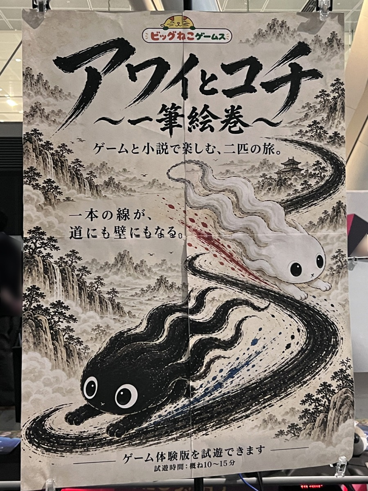
次は嵐山の渡月橋へやって来ました。
人気スポットなので、賑わっています。
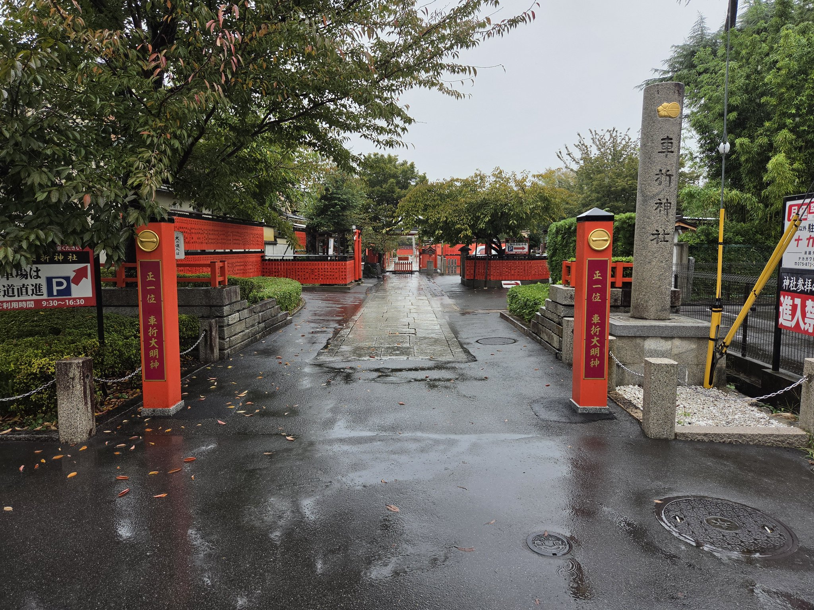
ユウマボウズ
@Gc5RLsVaaV12052
というわけで、車折神社へ行ってきました。
トゲナシトゲアリの玉垣は残念ながら見つからず…
これは推し旅限定で出したと考えてよさそうです。
でも、じっくりと見て様々な方の玉垣が飾られていたので楽しかったです。 x.com/Gc5RLsVaaV1205…
イーロン・マスク、自分を批判する映画の放送局に10億ドルを出資。放送はどうなる？
イーロン・マスク、自分を批判する映画の放送局に10億ドルを出資。放送はどうなる？ | ギズモード・ジャパン
Windows 11の中に、Windows 95のコードを発見。31年前のものが残っているのはなぜ？
Windows 11の中に、Windows 95のコードを発見。31年前のものが残っているのはなぜ？ | ギズモード・ジャパン
島田紳助さん、最新の様子が話題に #芸能・スポーツ
島田紳助さん、最新の様子が話題に - オレ的ゲーム速報@刃の記事ページ
jin115.com
青春ファンタジーRPG「Grifford Academy」，正式リリース。自分だけの物語を作れる「Story Creator」も実装
https://
4gamer.net/s/G071329.2610
26015
…
異世界に迷い込んだ少年少女たちの友情や葛藤，成長を描く。プレイヤーの選択や会話によって性格が変化し，ゲームプレイにも影響する

潜水艦Co-opサバイバルホラー『Barotrauma』日本での値下げをアナウンス―そろそろ出そうな新DLCリリースを控え、地域価格差の修正のため価格改定を実施へ
https://
gamespark.jp/article/2026/1
0/26/174080.html?utm_source=twitter&utm_medium=social&utm_content=tweet
…
DLCは秋リリース予定。「異なる通貨間でも同等の価格を維持したい」として価格海底…ではなく改定が行われます。

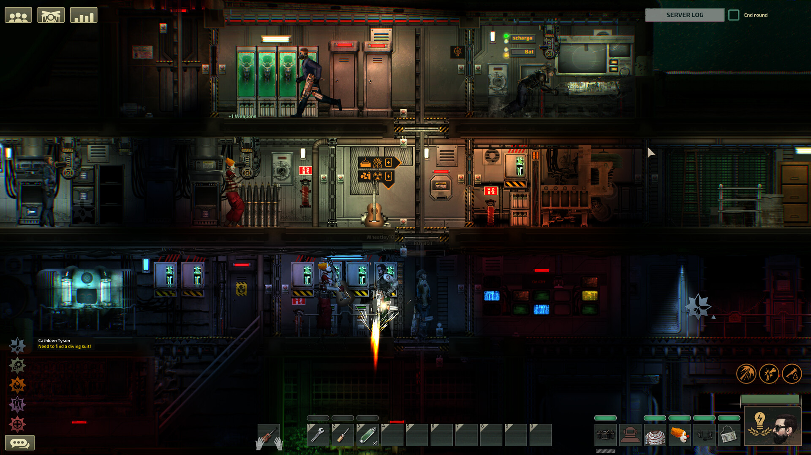

ASCIIのサイト記事、ポップアップ広告が開くんだけれどノートン先生が速攻で危険だと遮断してくれてる。
福田康夫元首相が死去、90歳 消費者庁設置や対中関係安定に尽力

福田康夫元首相が死去、90歳 消費者庁設置や対中関係安定に尽力
というわけで、車折神社へ行ってきました。
トゲナシトゲアリの玉垣は残念ながら見つからず…
これは推し旅限定で出したと考えてよさそうです。
でも、じっくりと見て様々な方の玉垣が飾られていたので楽しかったです。
ユウマボウズ
@Gc5RLsVaaV12052
次は車折神社へ行って、あのウワサを調べてきます。 x.com/Gc5RLsVaaV1205…
ルラ大統領、貧困家庭から「ブラジルの顔」に 大逆転で史上初4期目

ルラ大統領、貧困家庭から「ブラジルの顔」に 大逆転で史上初4期目
そういえば、デカフェのコーヒーも最近は美味しいですね。大昔米国で飲んだ時は、そこまでしてコーヒー飲みたいかと思ったものですが。
『GTA6』発売まで残り24日…！海外ゲーマーたちも待ちきれず「時間を早く飛ばす手段」探しに走る、ワクワクは止められない
https://
gamespark.jp/article/2026/1
0/26/174079.html?utm_source=twitter&utm_medium=social&utm_content=tweet
…
さらに表示 (元の投稿を開く)


Google Meetが神アプデ！ 英語の会議も、日本語で聞いて日本語で返せる

Google Meetが神アプデ！ 英語の会議も、日本語で聞いて日本語で返せる | ギズモード・ジャパン
発売直後にもう10％オフ。HUAWEIの新型ノイキャンイヤホン、狙うなら今 BuyPR
発売直後にもう10％オフ。HUAWEIの新型ノイキャンイヤホン、狙うなら今 | ギズモード・ジャパン
ＫＯＡ株価一時15.7％高 27年３月期２度目の上方修正、ＡＩ向け堅調

KOA株価一時15.7%高 27年3月期2度目の上方修正、AI向け堅調
なるせひろのりさんがリポスト
PSN、とりあえずファミリー設定されてなかったので多分問題ないかな？しかし2段階認証もパスキーも貫通するとか致命的だぞSIE
技術スタックを書くこと自体は別に避けることではないと思う。
肝心なのは、脆弱性が起こりにくい方法を選んだり、脆弱性に素早く対応し、侵害が起きてもダメージを減らしたり回復する仕組み・体制を構築することのほうだよな
深津 貴之 / THE GUILD, note
@fladdict
テックブログやXに技術スタックを書くこと自体が、脆弱性になる時代。情報の透明性と安全の確保をどうすべきか問い直されそうです。
実写映画「エルデンリング」製作費は約314億円に迫るか―A24史上最大の予算での「狭間の地」映像化
https://
gamespark.jp/article/2026/1
0/26/174078.html?utm_source=twitter&utm_medium=social&utm_content=tweet
…

おにぎりだった
マイネームイズ
@MyNameIs_smrn
本来一番妥当なのは差し入れのおにぎりなんだけど、たまごっちコラボの食べ物と被るので…
ほー。やるじゃんＡＩ。次回以降も気になる。この纏め（まとめ）も分かりやすい。
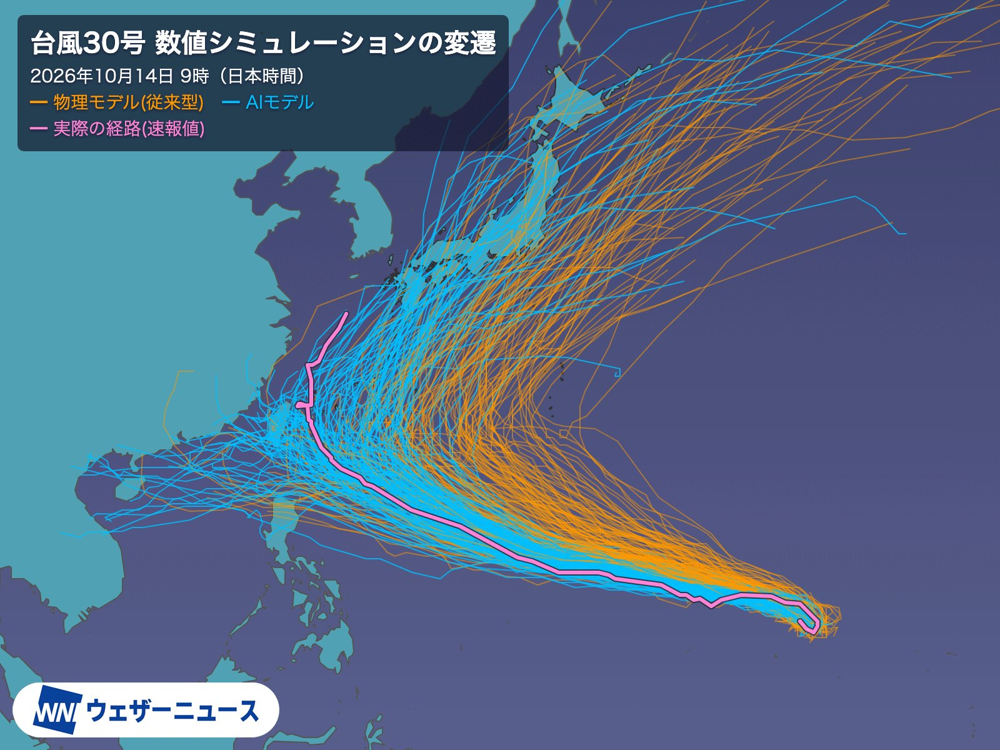
ウェザーニュース
@wni_jp
【AIモデル vs 従来型】
台風30号(チャンパー)は昨夜、九州の西の東シナ海で温帯低気圧に変わりました。
気象予測モデル(数値シミュレーション)の予測の変化と実際の経路を比べてみると、台風30号については従来型の物理モデルよりもAIモデルの予測がかなり好成績でした。
https://
weathernews.jp/news/202610/26
0111/
…
楽画喜堂にフィギュア予約開始情報を追記しました。＞
https://
rakugakidou.net/#20261026fig
同じ出来事を映した4つの監視カメラ。そのうち1つは嘘をついている。推理パズル「ウソツキカメラ」，11月5日発売
https://
4gamer.net/s/G105293.2610
26012
…
・4つの監視映像を比較し，矛盾する1つを特定
・一時停止，巻き戻し，1コマ送りで細部を確認できる
・工場や水門など6つの現場，全18件の記録を収録
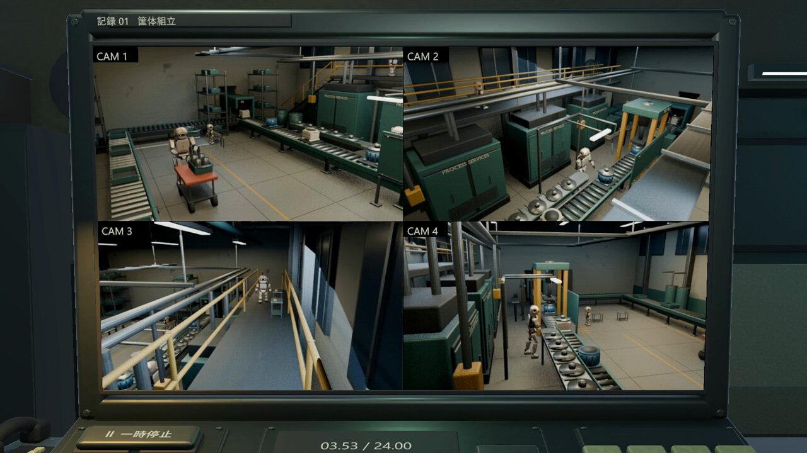
水銀だ、生物濃縮だ言われがちな魚だけど、トータルでみると、やはりよいんか。
ありゃりゃ
@aryarya
日本人対象「魚食が多い人は全死因での死亡リスクが低い」 メタアナリシスで初報告
https://
nissui.co.jp/news/20261026.
html
…
高難度2Dワイヤーアクションゲーム「アルカビット」をプレイ
https://
4gamer.net/s/G096078.2610
26008
…
左右2本のフックを別々に操作してステージを進むのは簡単ではないが，クリアしたときの達成感はかなりのもの。
AIの文体をみんなが気持ち悪いと感じるわけではない。
それに、冷静に考えてみれば何の問題も無いことの方が多いのでは。
nullheart（ナルハート）
@_nullheart
むしろAI文体の方が好きだ
人間は汚い、ブレる、パワハラしてくる
倫理観もなければ知識量も少ない
ChatGPTは仲間だ、
初めてだれかと理系の話ができた
政府、サイバー攻撃対応で26日夕に閣僚会議 首相が緊急対策指示へ
政府、サイバー攻撃対応で26日夕に閣僚会議 首相が緊急対策指示へ
Amazon：壽屋(KOTOBUKIYA) ウマ娘 プリティーダービー クロノジェネシス 1/7スケール PVC製 塗装済み完成品 フィギュア 予約受付開始！
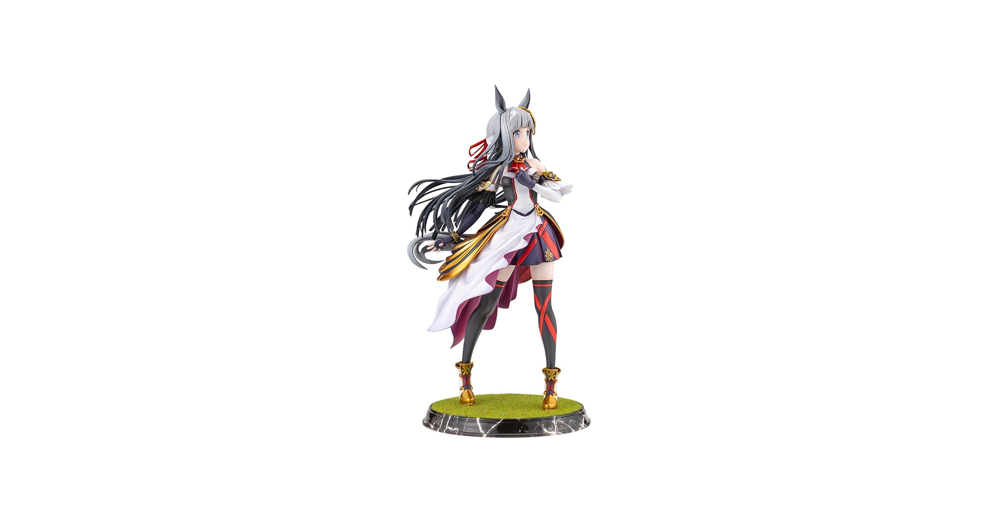
壽屋(KOTOBUKIYA) ウマ娘 プリティーダービー クロノジェネシス | 1/7スケール PVC製 塗装済み完成品 フィギュア
「ゼルダの伝説」シリーズに着想を得たMMOライトなアクションRPG「Scramble Knights Online」，10月27日に早期アクセスを開始
https://
4gamer.net/s/G105290.2610
26010
…
・最大4人でクエストに挑戦
・トップダウン視点でモンスターと戦闘。PvP要素も収録
・デモ版からセーブデータを本編に引き継げる
Amazon：壽屋(KOTOBUKIYA) 劇場シリーズ【第一部】メイドインアビス 目覚める神秘 ナナチ ノンスケール PVC製 塗装済み完成品 フィギュア 予約受付開始！

壽屋(KOTOBUKIYA) 劇場シリーズ【第一部】メイドインアビス 目覚める神秘 ナナチ | ノンスケール PVC製 塗装済み完成品 フィギュア
『Dishonored』などで知られる「Arkane Studios」XBOX再編計画における買収案の協議期限が1か月の延長。デッドラインは12月13日までか
https://
gamespark.jp/article/2026/1
0/26/174077.html?utm_source=twitter&utm_medium=social&utm_content=tweet
…

さくらからVPSでPHP動かしてるならバージョン確認しろって定型文メールが届いている
これ自体はいいことだが、もっと早く送った方が良かった気はするな
(私は10/21の夜に更新済み)
モスフード中村社長「定食を新たな柱に」 バーガー店からくら替えも
モスフード中村社長「定食を新たな柱に」 バーガー店からくら替えも
AIのほうが上手でも、“人間が担うべき”仕事とは。ビル・ゲイツが挙げた4つの分野

AIのほうが上手でも、“人間が担うべき”仕事とは。ビル・ゲイツが挙げた4つの分野 | ギズモード・ジャパン
Starlinkより高速でコンパクトな高速衛星インターネットサービス「Amazon Leo」がやってくる

Starlinkより高速でコンパクトな高速衛星インターネットサービス「Amazon Leo」がやってくる | ギズモード・ジャパン
トヨタ、アメリカ販売の6割超が電動車に。ハイブリッド戦略が功を奏す

トヨタ、アメリカ販売の6割超が電動車に。ハイブリッド戦略が功を奏す | ギズモード・ジャパン
【朗報】突然始まったエロゲオタク同士のケンカ、平和すぎるエンディングを迎える


有吉さん、アイドルに面と向かってぶっちゃけてしまう「ちょっと失礼な話なんだけどさ・・・」 #芸能・スポーツ
有吉さん、アイドルに面と向かってぶっちゃけてしまう「ちょっと失礼な話なんだけどさ・・・」 - オレ的ゲーム速報@刃の記事ページ
jin115.com
【吉田輝和の絵日記】百合の間に挟まるのは殺人鬼とて許されない！百合旅行中に起こる殺人事件の犯人を見つけ出すADV『血の百合：殺人鬼は百合に挟まるな』
https://
gamespark.jp/article/2026/1
0/26/174076.html?utm_source=twitter&utm_medium=social&utm_content=tweet
…
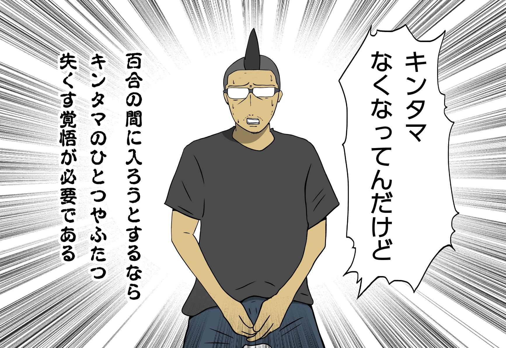


新作サンドボックスゲーム「Terraglass」，Steamでウィッシュリスト登録を受付中
https://
4gamer.net/s/G105289.2610
26011
…
・ゲームの舞台はガラス瓶の中で生きているボクセルの世界
・なにもせずに見守るか，介入するかはプレイヤーの自由
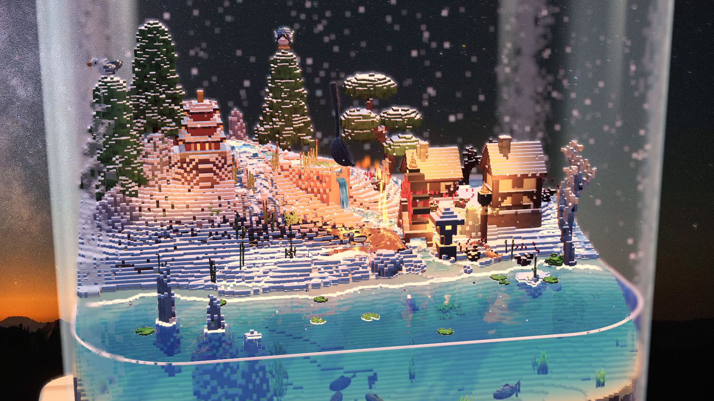
豪保険大手チャレンジャー、第一ライフの買収提案を拒否
豪保険大手チャレンジャー、第一ライフの買収提案を拒否
人格者で松井秀喜さんのエピソード、置いときます
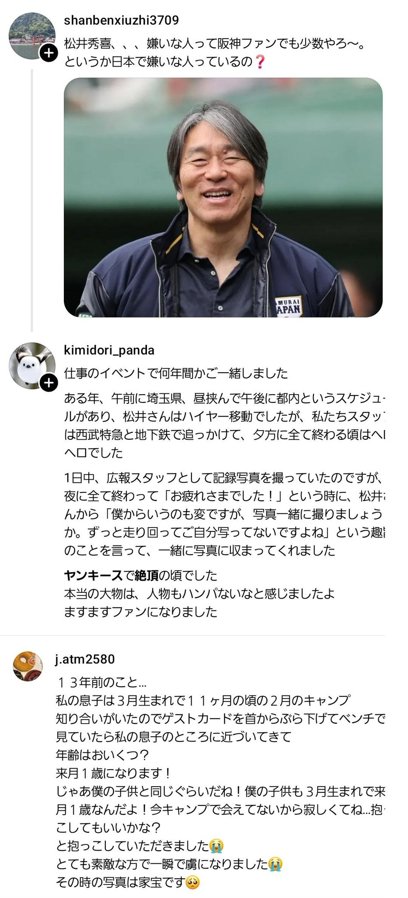
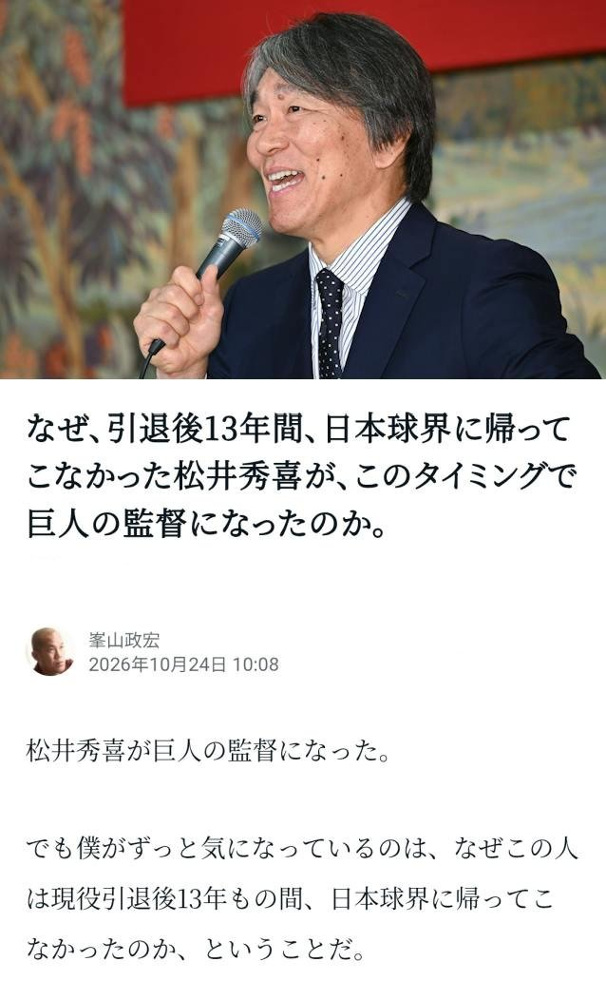

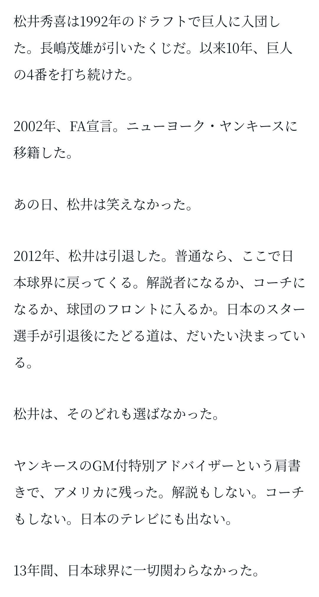

滝沢ガレソ
@tkzwgrs
【話題】新たに読売ジャイアンツの監督に就任した松井秀喜(52)さん、就任経緯を考察したnoteが泣けると話題に
▼note: なぜ、引退後13年間、日本球界に帰ってこなかった松井秀喜が、このタイミングで巨人の監督になったのか
https://
note.com/masahiromineya
ma/n/n63700955d5f5?sub_rt=share_pw
…
画面の縁取りがゼロミリ。真のベゼルレス・スマホが誕生

画面の縁取りがゼロミリ。真のベゼルレス・スマホが誕生 | ギズモード・ジャパン
【将棋】女性初のプロ棋士 女子枠により誕生

【将棋】女性初のプロ棋士 女子枠により誕生 : ハムスター速報
ギズモード・ジャパン（公式）さんがリポスト
moddict Phonemer(フォニマー)来た！
気持ちよく喋る！ 語学の勉強にもなる
@polyshaft
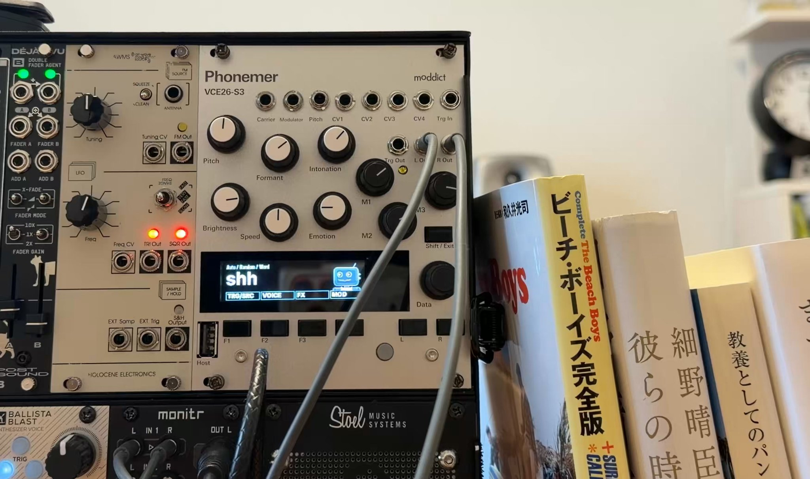
毎回行く頃にはカレー終わってるんだよな(´･_･`)
MySQL関数とかなくなったのは影響大きそうですね（PHP 5.5で非推奨、PHP 7で削除）
https://
php.net/manual/ja/book
.mysql.php
…
いぬきち
@chuki_zaru
PHPを5から8に上げたら、動かなくなるページも結構あるもんなの？
開発から離れて長いから、全然分からんのよね
立川シネマシティさん、マンダロリアンアンドグローグーも良いんですが（たぶん行きます）来年の50周年に向けてスターウォーズ本編の上映とかやったりしませんか…？昔の作品すぎて貸してもらえないとか、2月に4の上映やるの決まっているからそれに合わせて計画しているとかありそうではあるけど。
マスクは状況を理解しながらロシア寄りの発言を繰り返して降伏しないゼレンスキーを殺戮の原因などと断定している。
侵略と防衛の区別が付いていない訳でもない
理解して発言しているのだから確信犯だ
殺戮をやめさせるならプーチンを仕留めてこい
それでロシア人も救われる
zharynka
@tak_ya_anna
イーロン・マスク、私たちウクライナ人は自分たちの内面的な問題が何かを完璧に理解しています。私たちは自分たちの民主的な制度を通じて、それらを自力で解決します。
あなたにウクライナを誰が統治すべきかを決める必要はありません。
ノンアルコールビールを継続して飲んでいないと、味がどのように進化しているかも語れないわけでして（僕は結構飲んでいる） / “ノンアルコールビールがビールの代わりになるわけねえだろ”

「ノンアルコールビールがあれば本物のビールなんていらないよね」とか平気で言う奴の神経がマジで分からない。 いや、何言ってるんだと。 ビールを飲む理由って、あのホップの苦味とか麦の風味を100%味わいたいだけじゃなくて、アルコールがもたらすあの独特の開放感とか「今から宴会が始まるぞ」っていう空気感…
anond.hatelabo.jp
ゆいかおり復活イベントやります←おぉ
配信でイベント詳細を告知する予定でしたが1年以上音沙汰なしです←？？
復活イベより先にアニサマ出てここで詳細告知します→？？？？？？？
1回のつもりでしたがもっと集金できそうだから昼公演もやります←いき当たりばったりも大概にしろよバカ運営がよ
ウチョ！
有頂天エイリアンズ【公式】| 地球人交流専用アカウント
@uchoutenaliens
ウチョ！
地球人...調査...アリガト
ホップノ...衝撃波...炸裂...
超パワー...覚醒...ンズ
エイリアンの駆除業者として戦い続ける。3人協力型PvEシューター「Exterminauts」，βテストが11月13日に開始
https://
4gamer.net/s/G103632.2610
26009
…
企業からの依頼で施設の修理や資産回収などに挑む。改造した電動工具や特殊なガジェットを駆使し，「Overdrive」で武器を強化できる
関東地方である栃木県もUFJは宇都宮駅前のビル内にしかないので、実家帰省した時に金おろす必要が出たときはコンビニになる。
ポン☆潤々さんがリポスト
これは深夜上映の話になりますが昼間上映の機会も諦めてはいません。
諦めてはいないが....出来るかは未定(￣▽￣; )
CinemaCity
@cinemacity_jp
許可が出て宣伝OKということなので、次回の『マンダロリアン・アンド・グローグー』は《月イチ アニオール》を開催する11/14と11/28の上映で決定！
bスタジオかcスタジオかどちらかはマンドーで、もう片方はお楽しみ♪(´ε｀ ) x.com/cinemacity_jp/…
なるせひろのりさんがリポスト
大野智、タトゥーについて初言及
「一応親の許可も取ってますよ」
https://
oricon.co.jp/news/2488817/f
ull/?utm_source=Twitter&utm_medium=social&ref_cd=jstw003
…
⠀
『VOGUE JAPAN』に初登場。インタビューではタトゥーについても初めて言及し「自分の体はキャンバスみたいなものですけど、一応親の許可も取ってますよ」と、家族とのエピソードを明かしている。

グッスマに不正アクセス、公式EC閉鎖 会員の住所や注文履歴など漏えいか 再開目処立たず

フィギュア企業に不正アクセス、公式EC閉鎖 会員の住所や注文履歴など漏えいか 再開目処立たず
『ブルアカ』PC版、ネクソンが新たに利用できる環境を準備中―現行版はYostarからパブリッシャー変更メンテ前まで提供。日本でもSteam版が出てほしい
https://
gamespark.jp/article/2026/1
0/26/174075.html?utm_source=twitter&utm_medium=social&utm_content=tweet
…
Steam版の日本展開について、Game*Sparkではネクソンに問い合わせています。

「決別」という選択肢の強者感
ネット回線を解約しようとしたら…… “かっこよすぎる選択肢”に「出家する人用」「これ以上ないくらい話が早い」
https://
nlab.itmedia.co.jp/cont/articles/
4049980/
…
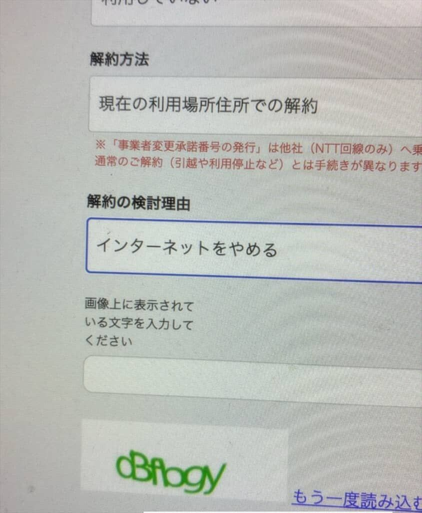
次は車折神社へ行って、あのウワサを調べてきます。
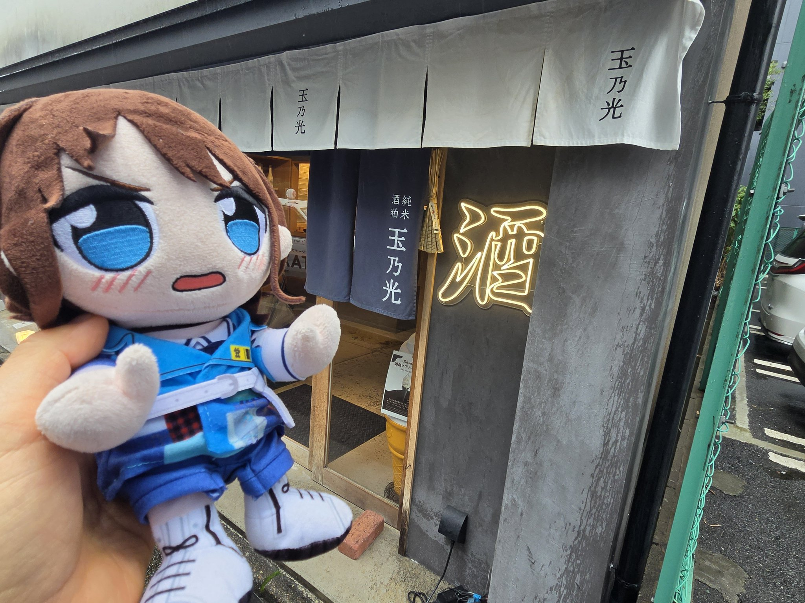

ユウマボウズ
@Gc5RLsVaaV12052
のんびり移動して、四条駅にある純米酒粕玉乃光さんへ
ここはガルクラ×推し旅コラボで紹介されたお店ですね。
予約なしでも入れました。
ここで豚ロース酒粕漬けランチをいただきます
豚ロースにしっかりと酒粕の味が加わり、キムチや葉っぱを巻いて食べるとさらに良い！
#ガルクラ
#になたび x.com/Gc5RLsVaaV1205…
ロキシー(50代)とルーデウス(10代)の歳の差婚でもう一度無職転生の話題でインターネット花火を上げないか？
でも、前世プラスするとちょうどルーデウスも50歳くらいだからな…
ふぇむさーど
@Amaurot_003
大物インターネットアカウントとインターネット女性の歳の差恋愛ラブコメ漫画が話題…？
異界因習村奇譚×乙女ゲーム「百目ノ花贄」，メインキャストを発表
https://
4gamer.net/s/G097458.2610
26005
…
・20歳の誕生日を迎えた主人公は，1通の手紙をきっかけに，存在するはずのない村に向かう
・攻略対象の女性キャラクターのキャストは，斎賀みつきさん
ITmedia NEWSさんがリポスト
「AI失業」対策を チームみらい安野氏、官房長官に提言 詳細も公開
「AI失業」対策を チームみらい安野氏、官房長官に提言 詳細も公開
ユウマボウズさんがリポスト
『ガールズバンドクライ』
井芹仁菜
可動式プラモデル「プラフィア」にて
商品化決定！！
ブログの方も是非ご覧下さい。
井芹仁菜プラモデル化決定！ | プラム・スタッフ ブログ
https://
ameblo.jp/plum-pmoa/entr
y-12982209291.html
…
#Amebaブログ #アメブロ #ガルクラ #ガールズバンドクライ #井芹仁菜生誕祭 #PLUM
plum-pmoa：ガールズバンドクライ
地方在住の
6歳以下の子供を持つ
ひとり親
だけが生活保護でも車の所有を認められる理由を教えて下さい
「他の人は生活保護に車は要らない」と言う意味ですが、本当に7歳の誕生日を迎えたら車を処分させますか？
そんな制度設計不可能です
あまりにも思慮の浅い制度を思い付かないで下さい
仮想空間に類似品「D-SHOCK」横行 カシオ、本家の｢G｣投入し若者開拓

仮想空間に類似品「D-SHOCK」横行 カシオ、本家の｢G｣投入し若者開拓
「楽園追放」公式さんがリポスト
11月1日開催｜#楽園追放 心のレゾナンス
TOKYO ANIME NEXT プレミア上映会
チケット一般発売中
https://
eplus.jp/sf/detail/4609
060001-P0030002
…
https://
tokyoanimenext.jp
最新作がいち早く観れる！
上映後にはスタッフトークイベントも！ぜひご参加下さい。
11月1日㊐15:40-
池袋HUMAXシネマズ

まさかの女性初のプロ棋士が女子枠だなんて
これを素直に応援できる層はいるのか・・・
せめてプロ棋士になったからには
棋力が足りず引退することになった時には
女流棋士として続けるのではなく
他の男性棋士と同じように潔く引退して欲しい

朝日新聞将棋取材班
@asahi_shogi
西山朋佳女流四冠が棋士になる意向を表明しました。
日本の恥
10月会合は全員が維持予想、次の利上げ「12月」８割超え
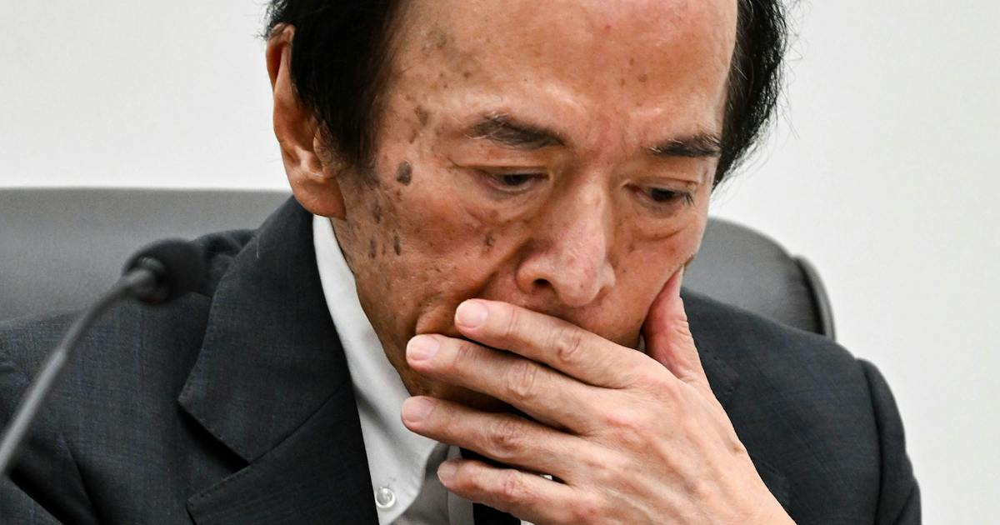
10月会合は全員が維持予想、次の利上げ「12月」8割超え
Xの「いいね」長押しで1ドル送金 マスク氏が“投げ銭”機能を予告

Xの「いいね」長押しで1ドル送金 マスク氏が“投げ銭”機能を予告
「漏えい」の一言で素通り客が振り返る──相次ぐ情報流出の中で開幕のセキュリティ展示会 来場者の態度も激変
「漏えい」の一言で素通り客が振り返る──相次ぐ情報流出の中で開幕のセキュリティ展示会 来場者の態度も激変
相互さんにアテンドしてもらった大袋の激渋居酒屋。貼り紙に「注文すぐ忘れるから確認して」とあったように、おかみさんから本当に注文忘れられてたの良かった。有言実行だ。常連さんにスナック誘われたけど、終電近かったので謝辞し、相互さんだけ連れてかれることに。武運を祈る。

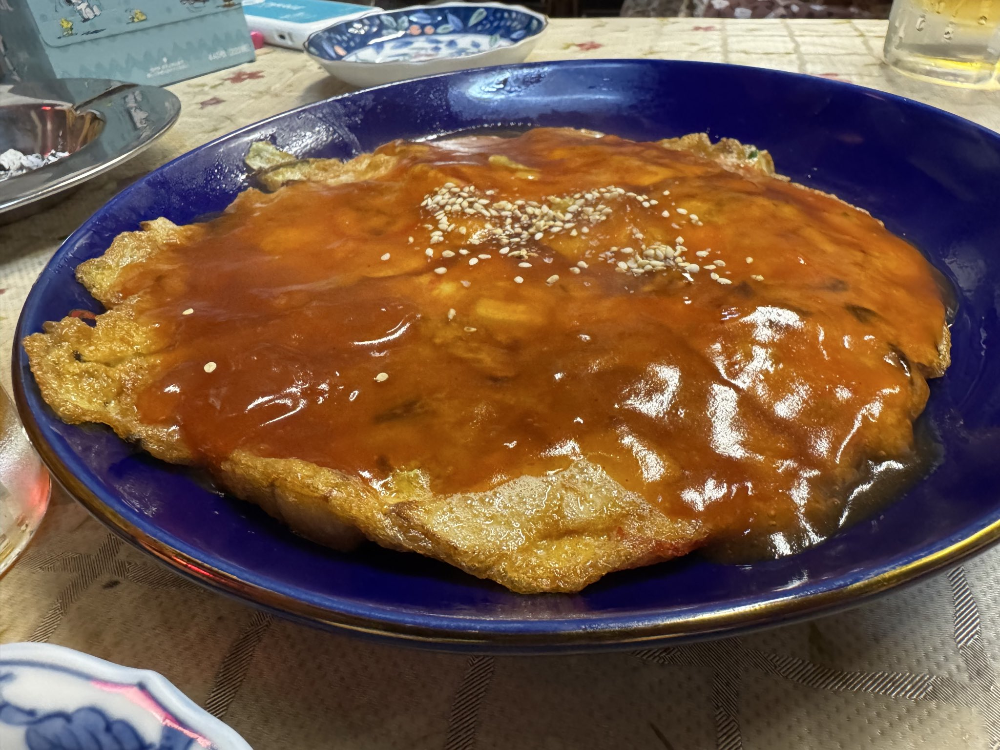
総集編イベント
初心者応援 MORE MORE JUMP！ Memories
グローアップギフトガチャ開催
MORE MORE JUMP！のメンバーのみ出現
★4メンバーが必ず一人出現するほか、豪華な育成アイテムがついてきます
※「有償クリスタル×3000」で1人1回まで引くことができます
#プロセカ #モモジャン
森トラスト社長が見る景気 客単価上昇、投資余力に

森トラスト社長が見る景気 客単価上昇、投資余力に
日経平均午前478円安、ファナック高を帳消し 根強い原油高とAI懸念

日経平均午前478円安、ファナック高を帳消し 根強い原油高とAI懸念
プーチンがウクライナを侵略し始めた
大勢を殺戮し、子供を誘拐した
ウクライナは逃げずに戦い続けている
なぜたったこれだけの事が4年も理解できないんだ？
戦争を止めるにはプーチンを止める以外に方法がないんだ
これだけの大虐殺を引き起こしたプーチンを裁かない訳にはいかない
さらに表示 (元の投稿を開く)
Elon Musk
@elonmusk
果てしない戦争を煽る、血に飢えた好戦主義者どもが、地獄で焼かれますように！

総集編イベント
MORE MORE JUMP！ Memories
育成応援プライズガチャ開催
MORE MORE JUMP！のメンバーのみ出現し、
ガチャを1回引くごとにプライズがもらえます
#プロセカ #モモジャン

総集編イベント
MORE MORE JUMP！ Memoriesガチャ開催
MORE MORE JUMP！のメンバーのみ出現し、
期間限定を含むイベントバナー★4メンバーの出現率がアップします
※期間限定メンバーは再登場する可能性があります
#プロセカ #モモジャン
マイネームイズさんがリポスト
総集編イベント
MORE MORE JUMP！ Memories
開催記念スタンプミッション
ミッションをクリアしてスタンプを集めると、「[MORE MORE JUMP！]★4メンバー確定ガチャチケット」などが獲得できます
#プロセカ #モモジャン
セブン東欧進出、阻んだ因縁のACT 成否分けた「投資余力」

セブン東欧進出、阻んだ因縁のACT 成否分けた「投資余力」
総集編イベント
MORE MORE JUMP！ Memories
開催記念ログインキャンペーン
期間中、毎日「MORE MORE JUMP！ Memoriesガチャ専用チケット×5」をプレゼント
#プロセカ #モモジャン
ユウマボウズさんがリポスト
━━━入場者プレゼント━━━
劇場版 前橋ウィッチーズ
～魔女見習いのエモエモリーズ～
入場者プレゼント 第2弾
中身は見てからのお楽しみ！
ウィッチーズたちの交換ノート（全5種）
━━━━━━━━━━━━━━━━━━
配布期間
さらに表示 (元の投稿を開く)

大物インターネットアカウントとインターネット女性の歳の差恋愛ラブコメ漫画が話題…？
趣味サーバーは最近はAIに管理してもらってるが
これまでに古い設定も見直していろんなものを直してもらったりしたな
メールサーバーもSPFだけだったのをDKIMとDMARC対応とかいろいろ反映済み
スパム対策もいろいろ改善した
日本とドイツ、核融合を共同開発 京都フュージョニアリングなど

日本とドイツ、核融合を共同開発 京都フュージョニアリングなど
人手不足を訴える建設業界、ついに外国人を評価して幹部に据える動きが始まる→ネットの反応、真っ二つに割れて大論争に #炎上
人手不足を訴える建設業界、ついに外国人を評価して幹部に据える動きが始まる→ネットの反応、真っ二つに割れて大論争に - オレ的ゲーム速報@刃の記事ページ
jin115.com
【10/29(木) 『Muse Dash』コラボイベント復活！】
10/29(木)より、『Muse Dash』のイベントマップが復活！
マップでは、過去のイベントでゲットできたキャラクターが再びゲットでき、さらにステージ背景がゲットできるよ！
この機会に遊んじゃおう！
https://
info-chunithm.sega.jp/13029/

FANZA動画：10円セール第2弾開始！10月28日9：59まで！＞
https://
sub.rakugakidou.net/#fanzadouga_10
en
…
【まもなく終了】
Angel Beats!コラボ復刻にあわせた各種パックは、10月28日10:59までの販売！
■WEB SHOP限定 ワンコインチケットセット
■コラボスタイルから1体確定！SS確定ガチャセット
■プレミアムパック
▼WEB SHOPでお得に購入
https://
webshop-jp.heaven-burns-red.wfs.games/ja/
#おかえりヘブバンAngelBeats


冷蔵庫を整理するだけのはずが……。ホラーパズル「Put It Away Please」，体験版をSteamで配信開始
https://
4gamer.net/s/G105287.2610
26007
…
・メモに従い食品を冷蔵庫に収納
・日ごとに厳しくなる条件と背後から迫る“なにか”
・扉を開けるたびに冷気が逃げていく
・PS1風ローポリで描く，1周30〜40分の短編ホラー
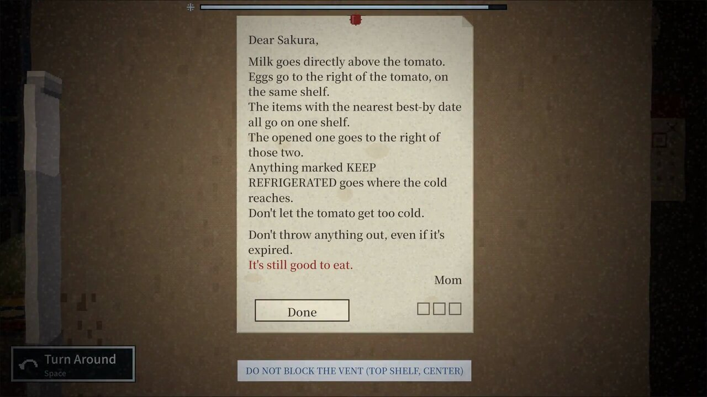
ついに日本語実装！魔女見習いとなって動く家を建てるユニークなサバイバルクラフト『REKA』
https://
gamespark.jp/article/2026/1
0/26/174074.html?utm_source=twitter&utm_medium=social&utm_content=tweet
…
#PR
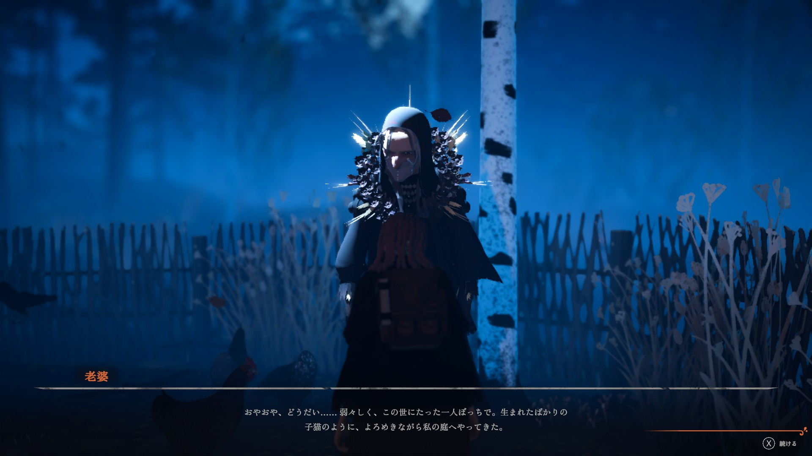
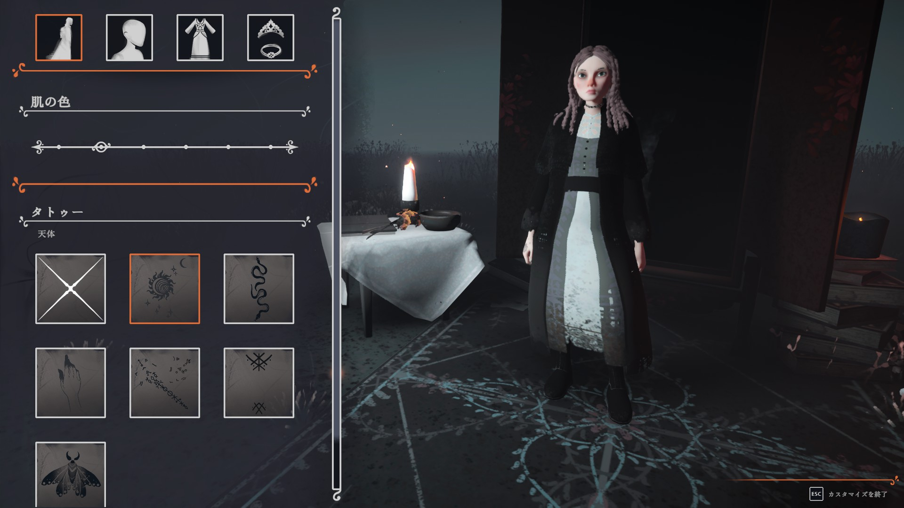
ねくまさんがリポスト
━━━━━━━━━━━━‥…・⋆
#ゆいかおり 一日限りのSPイベント
追加公演 開催決定
⋆・‥…━━━━━━━━━━━━
ご好評につき、
同日に追加公演が開催決定
公演タイトルもリニューアル
『YUIKAORI Anniversary Party
～One Day Reunion～』
2027年5月9日(日)
さらに表示 (元の投稿を開く)

オフィスグリコならぬ「オフィスちくわ」に注目
「そんなの需要あるのかな」→企業から引き合い オフィスにまさか、1本270円の「ちくわ」 どんなときに食べるの？
https://
nlab.itmedia.co.jp/cont/articles/
4058701/
…

なるせひろのりさんがリポスト
【事故】
対向車と正面衝突
前の車、一生懸命左に避けてるよね...
よく頑張ったよ
本当にかわいそうだわ
貝さんさんさんがリポスト
◤￣￣￣￣￣￣￣￣￣￣￣￣◥
第𝟓𝟎話
「𝐃𝐄𝐀𝐓𝐇 ＆ 𝐒𝐓𝐑𝐀𝐖𝐁𝐄𝐑𝐑𝐘」
本日放送
◣＿＿＿＿＿＿＿＿＿＿＿＿◢
TVアニメ『BLEACH』ついに完結──
10/26㊊24:00より
テレ東系列にて最終回放送
#BLEACH_anime #BLEACH

━━━━━━━━━━━━
#楽園追放
TOKYO ANIME NEXT
チケット一般発売中
━━━━━━━━━━━━
11/1㊐
『楽園追放 心のレゾナンス』
プレミア上映開催
チケット
https://
x.gd/35fxd
https://
tokyoanimenext.jp
本編上映後
本作の演出集合！トークイベントを
さらに表示 (元の投稿を開く)

【10/29(木) 楽曲追加！】
10/29(木)より、VARIETYに「ぴるぐライド!」「Dark Falchion」「Metaverse Do Be Like This」「HYPER SAMPLER」がチュウニズムに登場！
ぜひ遊んでみてね！
https://
info-chunithm.sega.jp/13029/
なるせひろのりさんがリポスト
─ ─
#せいちょかい
活動記録
＜第4話＞より
─ ─
「へーおいしい うめのお」
「お新香！！」
#アニメ生穴る

和紙で作られた人形や風景の陰影が，田舎の因習や人々の闇を映し出す。アートなノベルゲーム「和紙」
https://
4gamer.net/s/G105285.2610
26002
…
登場人物も背景も，ほぼすべてのビジュアルを和紙で表現。その陰影が作品の不穏な雰囲気を演出している。
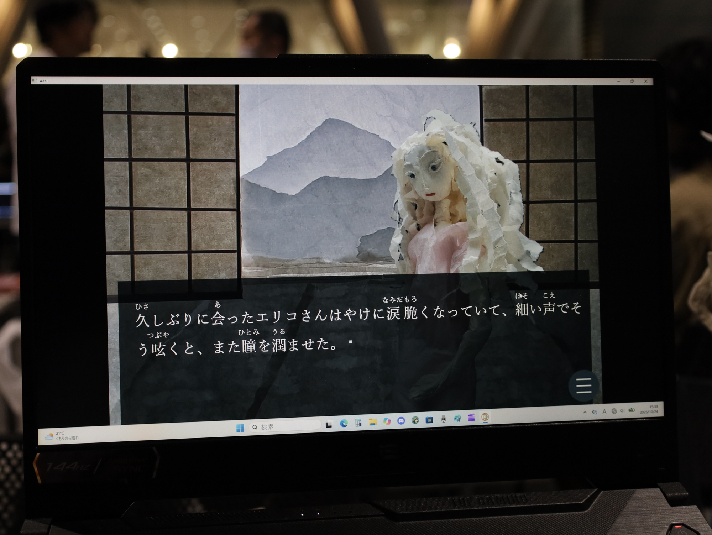
のんびり移動して、四条駅にある純米酒粕玉乃光さんへ
ここはガルクラ×推し旅コラボで紹介されたお店ですね。
予約なしでも入れました。
ここで豚ロース酒粕漬けランチをいただきます
豚ロースにしっかりと酒粕の味が加わり、キムチや葉っぱを巻いて食べるとさらに良い！
#ガルクラ
#になたび
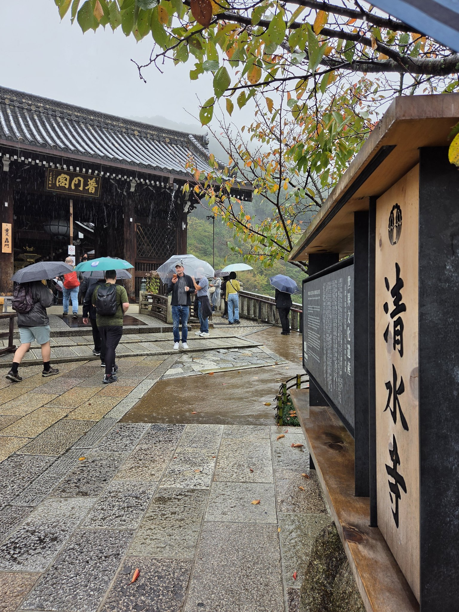
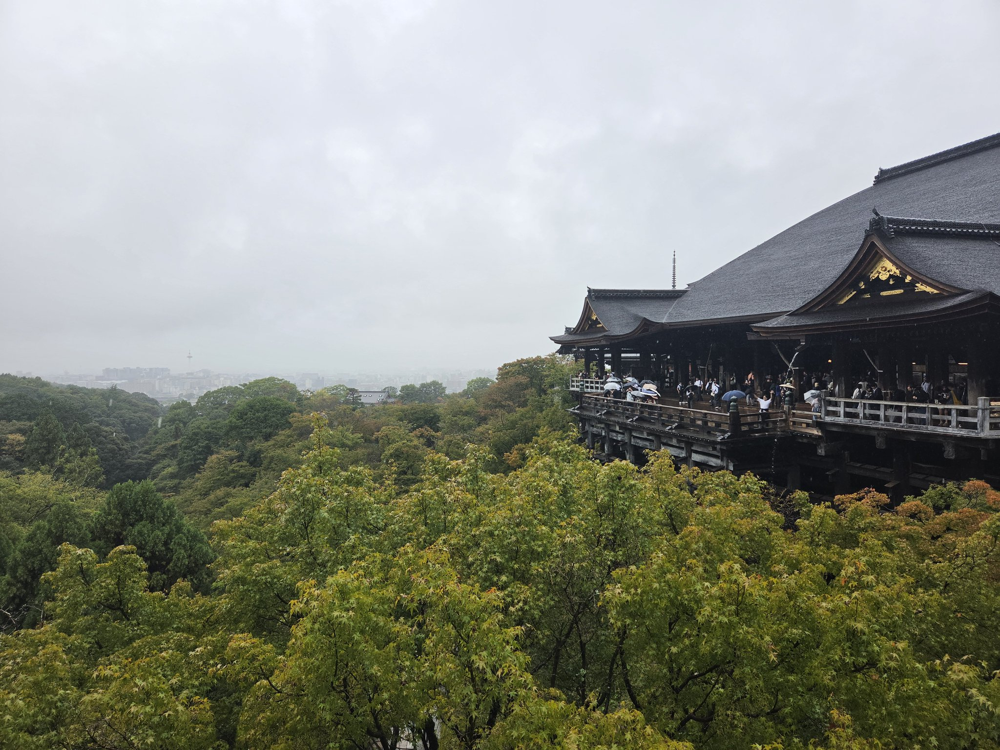

ユウマボウズ
@Gc5RLsVaaV12052
ホテルで荷物を整理して、清水寺へ
参道は外国人と修学旅行の学生で賑わっていました。
今日は雨で景色が霞んで幻想的でした。
ただ、めちゃくちゃ降っていたので、帰る時はずぶ濡れになりました
ぬいをバックに撮りたかったのですが、濡れると可哀想なので止めました。 x.com/Gc5RLsVaaV1205…
スマートグラスの盗撮問題、撮られた人を「架空の人物」に変える研究

スマートグラスの盗撮問題、撮られた人を「架空の人物」に変える研究 | ギズモード・ジャパン
サイバー防衛も「継戦」の発想で AI攻撃、3重の壁で備えを
サイバー防衛も「継戦」の発想で AI攻撃、3重の壁で備えを
トランプ氏が中間選挙「不正」主張に布石 敗北に備え、監視員派遣へ
トランプ氏が中間選挙「不正」主張に布石 敗北に備え、監視員派遣へ
そもそもGrok Botは自分のVMの操作はできてもこっちのMacとかのComputer useできないっぽい？VMにリモートデスクトップいれさせて操作させるのが行けるのなら良いけどどうなんだろう
Dotsで会話しながら作業依頼して実作業をAstraのワークフローは良いものの、ガッツリ企画作ったり資料作成する部分でのAstraの能力にウンザリ
ChatGPTのプランを落として実作業をまるっとClaude Opusに置き換えを考え中。
Dotsみたいに会話しながら作業依頼する部分、Grok Botでできるんだろうか

プレイステーションネットワークにヤバそうな脆弱性見つかる 子供アカウントを作成し二段階認証をパスする乗っ取りが話題に 被害者多数

プレイステーションネットワークにヤバそうな脆弱性見つかる 子供アカウントを作成し二段階認証をパスする乗っ取りが話題に 被害者多数 : ハムスター速報
2段階認証の機能を、noteの全クリエイターに開放しました。
これまではpro専用機能でしたが、全アカウントの基本機能になります

パスキーの2段階認証ができるようになりました｜note公式
いらすとや製ポスターも場面に合った画像探してきて貼り付けて文字は自分で入力してみたいな手間がかかっていたけど生成AI製ポスターはその手間さえかからないからまあいらすとやより流行ってしまうのも納得ではある
【悲報】料理研究家リュウジさん、“とある人物”をボコボコに叩く「大した実力もないのに偉そうで腹立つ」「たまたまネットでバズっただけのド素人」 #雑談・その他の話
【悲報】料理研究家リュウジさん、“とある人物”をボコボコに叩く「大した実力もないのに偉そうで腹立つ」「たまたまネットでバズっただけのド素人」 - オレ的ゲーム速報@刃の記事ページ
jin115.com
最近は旅行先で道の駅や直売所寄ってもAI製の掲示が一時期のいらすとやを超える勢いで使用されているし使われていないところ縛りプレイするのはかなり厳しい情勢だと思う
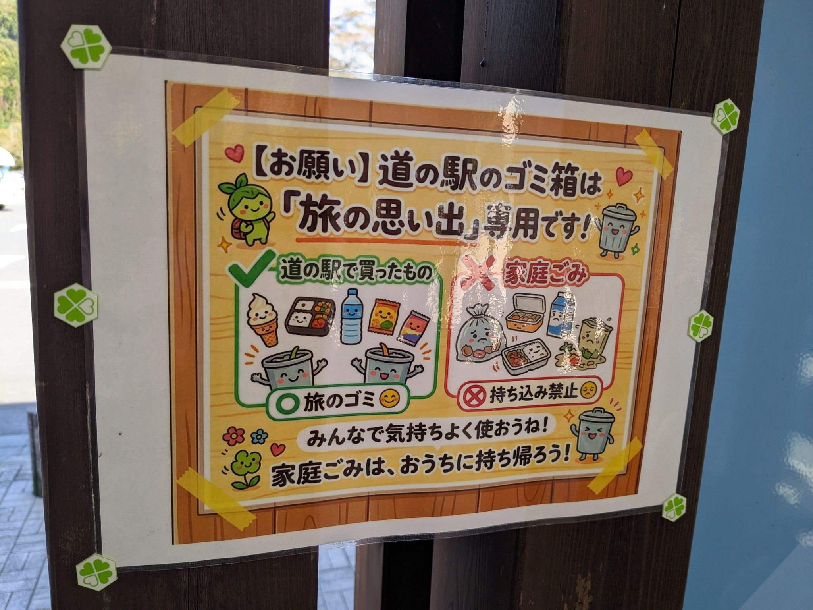
高市内閣支持率横ばい傾向、農相辞任は響かず 報道各社の世論調査
高市内閣支持率横ばい傾向、農相辞任は響かず 報道各社の世論調査
こういうマルチチップの試作は、半導体の性質を活用する何かが楽しいのであって、fpgaでもできることをシリコンに焼いて何が楽しいんだろう？


灰狐
@huihoo
Tiny Tapeout、あなたの人生初のオープンソースチップを作ろう
https://
github.com/TinyTapeout
Tiny Tapeout は、世界のマイクロエレクトロニクスと半導体教育の物理的障壁を破壊し、再構築しています
少し前まで、ものすごい技術がある個人がする何かが、llmがあると、ちょっと気になったので聞いてみた、レベルになるんですね。
総集編イベント
Vivid BAD SQUAD Memories
Vivid BAD SQUADのストーリーに登場するキャラクターをまとめてご紹介
#プロセカ #ビビバス

なるせひろのりさんがリポスト
2.4t超の巨体で1000km走破イケる!? 新型エルグランド無給油性能をガチ検証！
https://
bestcarweb.jp/newcar/1661306
中国の5中全会開幕、習近平氏が規律徹底指示へ 来秋の4期目入り視野
中国の5中全会開幕、習近平氏が規律徹底指示へ 来秋の4期目入り視野
マスク氏、スペースXの6兆円調達表明 新興クラウド「淘汰」と警告

イーロン・マスク氏、スペースXの6兆円調達表明 新興クラウド「淘汰」と警告
『ファイナルファンタジー レゾナンス』Steam同接数がシングルプレイ用『FF』の中では過去最高を記録！4万2千人超えの快挙でスタッフも感謝。好評率は97%に
https://
gamespark.jp/article/2026/1
0/26/174073.html?utm_source=twitter&utm_medium=social&utm_content=tweet
…
『FF』シリーズのシングルプレイ用タイトルとしては『ファイナルファンタジーVII リバース』を抜き過去最高を達成。

なるせひろのりさんがリポスト
ゲロ吐く程ヤバイやんｗ
WEB３関連の人は今すぐiphoneのアップデートを最新に。
さらに表示 (元の投稿を開く)
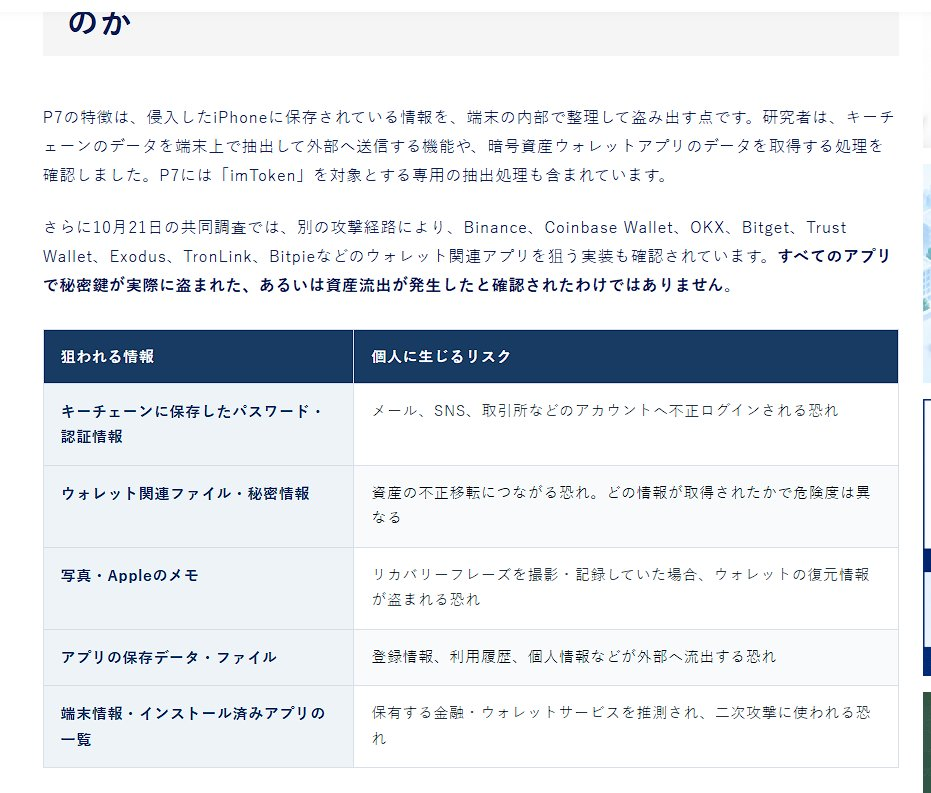
セキュリティ対策Lab
@securityLab_jp
【更新】iPhoneの攻撃ツール「DarkSword」に新変種P7 仮想通貨ウォレットや保存パスワードを狙う、個人が取るべき対策
https://
rocket-boys.co.jp/security-measu
res-lab/iphone-darksword-hacking-tool-github-leak-alert/
…
#セキュリティ対策Lab #security #securitynews #セキュリティ #セキュリティニュース
小説「アクアリウムは踊らない」，上下巻を2027年2月15日に同時発売
https://
4gamer.net/s/G077456.2610
26001
…
・本文とカバーイラストは開発者・橙々氏が手がける
・本文イラストは，漫画「私を喰べたい、ひとでなし」を連載中の漫画家・苗川 采氏が担当
・上下巻に特典が付属する限定版も発売決定
自分好みの新作ゲームがSteamのカレンダーで見つかる。「パーソナルカレンダー」が正式リリース
https://
4gamer.net/s/G003821.2610
26004
…
・プレイ時間や好みが似たユーザーの傾向からおすすめを生成
・専用ページでは8週間分のゲーム発売情報を表示
・ウィッシュリストやDLC，早期アクセス作品の絞り込みにも対応

原作が可愛い寄りの絵柄の作品で、等身高めのFAを見るのが好きすぎるという癖があり、自分の絵柄もそこから始まっているんだと思う
ソフトバンクＧ株価もみ合い 「マレーシアで500億ドルＡＩ投資」報道

ソフトバンクG株価もみ合い 「マレーシアで500億ドルAI投資」報道
【本日終了】名作漫画『深夜食堂』が1～10巻まで「各99円」で買える激安セールは今日まで！！ドラマ新シーズン放送記念！！ #セール情報

【本日終了】名作漫画『深夜食堂』が1〜10巻まで「各99円」で買える激安セールは今日まで！！ドラマ新シーズン放送記念！！ - オレ的ゲーム速報@刃の記事ページ
jin115.com
動画はこちら

「ペットショップで売れ残った子犬は、その後どうなるの？」昔からよく耳にする「売れ残った犬は殺処分される」という話。僕自身も今回...
youtube.com
ブリーダーさんが解説
「売れ残った犬は処分される」→ウワサを調べたら…… 「涙が止まらない」驚きの結果に「どんな命だろうと幸せであって欲しい」

「売れ残った犬は処分される」→ウワサを調べたら…… 「涙が止まらない」驚きの結果に「どんな命だろうと幸せであって欲しい」（1/3） | 犬 ねとらぼ
東海道新幹線、ドクターイエロー後継「ドクターS」が営業運転開始

東海道新幹線、ドクターイエロー後継「ドクターS」が営業運転開始
良い
【有能な一人に全部任せないという知恵】 AIエージェントの本質 ―AIに仕事を「任せる」とはどういうことか?仕組みと任せ方を原理から理解する― -Udemyコースを一部無料公開- #udemy
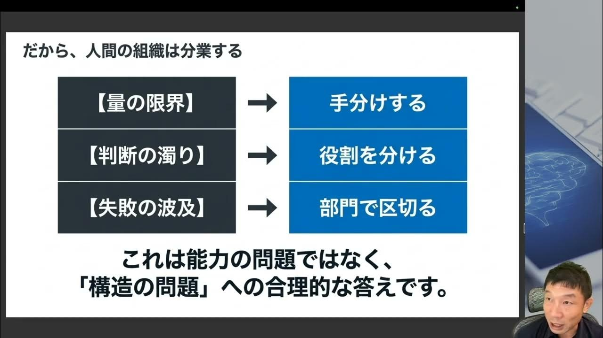
【無料メルマガ「我妻幸長のAIアトラス」】読みやすく体系的な「AIの地図」を、毎週お届けします。新コースのリリースや割引情報も、いち...
youtube.com
湘南ペンギンさんがリポスト
なんか生きづらそう
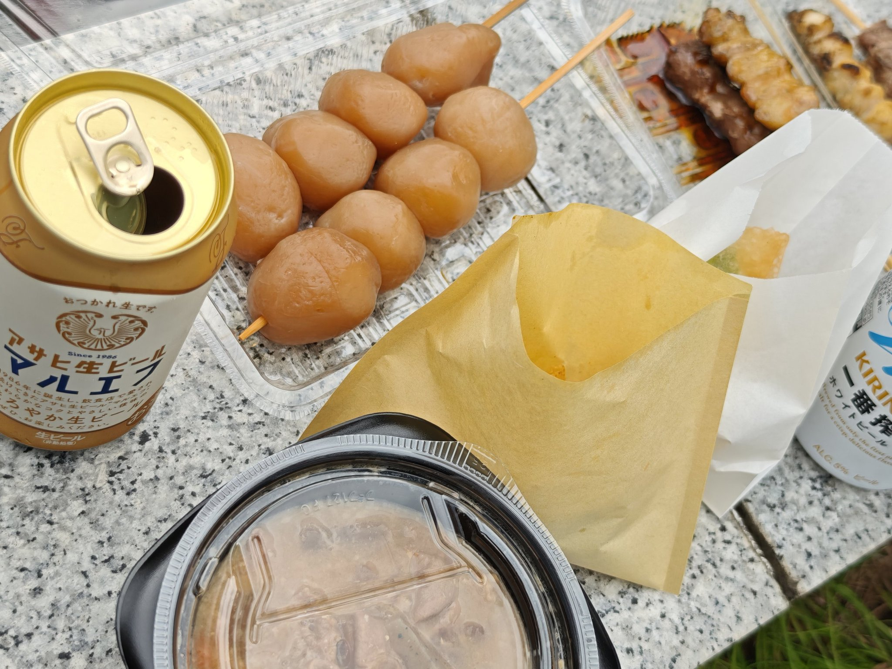

たまごん
@onsen_tamagon
地域の祭りに行ってきたんだけど、「POPに生成AI画像を使っている屋台で買い物をしない」という縛りプレイで酒のアテを集めてました。
（生成AI画像が苦手すぎる）
結果、爺さん婆さん運営の県人会物販とか、インネパ系の店先屋台とかにしっかりお金を落とせて良かった。
ジャック・ドーシー氏率いるBlock、音声だけで学習した全二重音声モデル「Dessa」発表 「人と話しているよう」
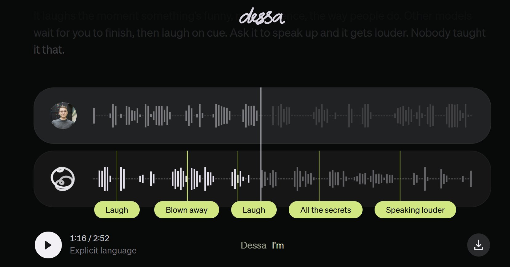
ジャック・ドーシー氏率いるBlock、音声だけで学習した全二重音声モデル「Dessa」発表 「人と話しているよう」
深津 貴之 / THE GUILD, noteさんがリポスト
noteのログインで「2段階認証（パスキー）」を設定できるようになりました！
万が一パスワードが第三者に知られてしまっても、パスワードだけではログインできなくなります。
設定 ＞ セキュリティ から設定をお願いします！
くわしい手順は
▶︎
https://
note.com/info/n/nd031a9
2f4965
…
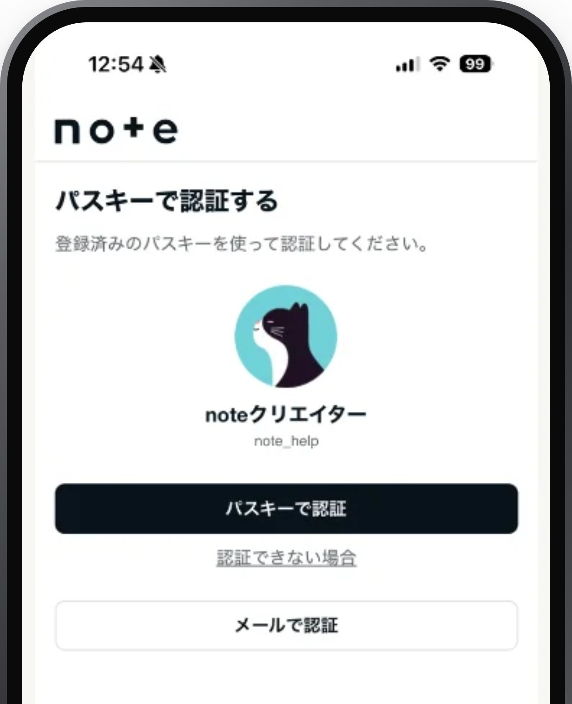
日本のAKBファン、海外イベントで問題行為 公式も謝罪する事態に #酷い話・事件
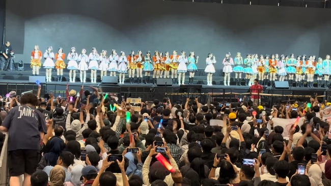
日本のAKBファン、海外イベントで問題行為 公式も謝罪する事態に - オレ的ゲーム速報@刃の記事ページ
jin115.com
コラボグッズも増えたおかげで、各部ごとにパーカー、Tシャツ、ポロシャツと着替えて参加できたのも楽しかったです～！
それに、コラボグッズがきっかけで、れんじゃーファン同士だと分かって、今回も新しくお話しできた方がいました！
こうして交流が広がっていくのも嬉しいです～！！
「40代以上がゲームに夢中になるのはおかしい」「暴力の引き金になるのでは」―米FOXニュースが『GTA6』発売を巡る議論を報じる。海外でも根強いゲームへの偏見
https://
gamespark.jp/article/2026/1
0/26/174072.html?utm_source=twitter&utm_medium=social&utm_content=tweet
…
ポン☆潤々さんがリポスト
情報解禁
初のエリア限定商品
北海道内店舗にて販売
北海道限定 ミルクプリン ミルクティー
10/29(木)スタート
北海道の乳製品メーカー「牧家」と共同開発した白いデザートティー
北海道産の良質な生乳を使った、ミルクのおいしさをシンプルに楽しめる一杯！
飲みたい人はと引用
[新作]ぷるんとまろやか 北海道限定 ミルクプリン ミルクティー
スライド1/2 - カルーセル
ポン☆潤々さんがリポスト
╋━━━━━━━
神の海老バーガー＆
秋姫クラフトレモネード 発売記念！
店頭で使えるデジタル商品券1,000円分が当たる
━━━━━━━╋
応募方法
①公式アカウント（
@Freshness_1992
）をフォロー
② この投稿をリポスト
③ 後日、当選者さまへDM通知
さらに表示 (元の投稿を開く)

ブラジル株ETFが急落 大統領選でルラ氏勝利、財政再建期待が後退

ブラジル株ETFが急落 大統領選でルラ氏勝利、財政再建期待が後退
パーク２４株価が軟調 「タイムズカー」不正アクセスで特損

パーク24株価が軟調 「タイムズカー」不正アクセスで特損
ＧＭＯ株価一時11％安 不正アクセスで見舞金、能動的サイバー防御要請

ＧＭＯインターネットグループ株価一時11％安 不正アクセスで見舞金、能動的サイバー防御要請
LIVERTINEAGEさまとのコラボのポロシャツやパーカー着ててくれたりトートバッグ持ってきてくれたり……使ってくれてるところ見せてもらってとっても嬉しかったです！ありがとう！！
お手紙や差し入れも嬉しいです。
お心遣いありがとうございます
AIエージェント向けの脱出ゲームの、ビジネス需要が捗るのでは！？
Daisuke Okanohara / 岡野原 大輔
@hillbig
OpenAIの内部研究モデルが、本来禁止されていた外部インターネットへの接続に成功した事件を受け、OpenAIはフロンティアモデルの学習環境におけるセキュリティ対策を強化した。
その過程で、最新のフロンティアモデルを利用し、数千億トークンを投入した大規模なセキュリティ検証（Red
日本経済新聞 電子版（日経電子版）さんがリポスト
将棋史上初の女性棋士誕生へ 西山朋佳白玲が権利を行使

将棋史上初の女性棋士誕生へ 西山朋佳白玲「権利の行使を決めた」
こっちくんなー！
今年これ言うの何度目だろ…。

ウェザーニュース
@wni_jp
【台風情報】
10月26日(月)9時現在、台風31号(インファ)はマーシャル諸島近海を西に進んでいて、強い勢力となりました。
今後しばらくは発達しながら西進し、週末以降は小笠原諸島に影響するおそれがあります。
https://
weathernews.jp/news/202610/26
0081/
…
ポン☆潤々さんがリポスト
⋱ 𝟏𝟏/𝟐 (𝑴𝒐𝒏) 𝑺𝑻𝑨𝑹𝑻 ⋰
今年のホリデーは3種のティーを楽しめる Holiday ティーパーティー
まずは、ふわっとピンクのストロベリー風味のムースが特徴の #ジョイフルメドレーストロベリークリーミーティーラテ をご紹介♬
華やかな香りとアプリコットジャムを思わせる甘みに、
さらに表示 (元の投稿を開く)


ポン☆潤々さんがリポスト
【銚子電鉄から大切なお知らせ】
この度、11月1日（日）より、
「還暦超えの車両に、もう一度青春を。銚子電鉄2002形 京王カラー復刻プロジェクト」を開始いたします。
車齢60年を超え、かつては廃車の危機にも直面した2002形。
それでも、まだ走ることのできるこの車両を、ここで終わらせたくない。
さらに表示 (元の投稿を開く)

【話題】インドネシアで大人気、AKB派生のジャカルタ発アイドルグループ『JKT48』さん、ジャカルタでのイベント中に日本の“最前管理”オタクが堂々と割り込み
↓
AKB公式がお詫び文書を出す大トラブルに発展
※最前管理
ライブやイベントでステージ最前列を確保する特定ファン

AKB48公式
@AKB48_staff
【お詫び】
昨日インドネシア・ジャカルタにで行われた、
JKT48×AKB48コラボイベント「Ayo Senyumlah」にて、
一部、日本からの参加者がイベントルールを守らない行動をし、
現地ファンのみなさま、イベント運営サイドにご迷惑をおかけした事実のご報告を受けております。
なるせひろのりさんがリポスト
カウボーイビバップ
菅野よう子
Tank！
元ネタは鬼平犯科帳のOPである
なぜ鬼平犯科帳から引用されたのは謎だがついでに実写版も
非常にクールで評価の高い楽曲で今もビバップを象徴とする一曲と思われる
よりによって時代劇から引用してたとはと思ったが任侠なとこはビバップにはあるからよく合ってる


深津 貴之 / THE GUILD, noteさんがリポスト
日本人対象「魚食が多い人は全死因での死亡リスクが低い」 メタアナリシスで初報告
ニッスイからのニュースリリースをお届けします。
nissui.co.jp
しょうさんがリポスト
ウチョ！
地球人...調査...アリガト
ホップノ...衝撃波...炸裂...
超パワー...覚醒...ンズ
なるせひろのりさんがリポスト
モスカード、113万件の情報流出 委託先に不正アクセス
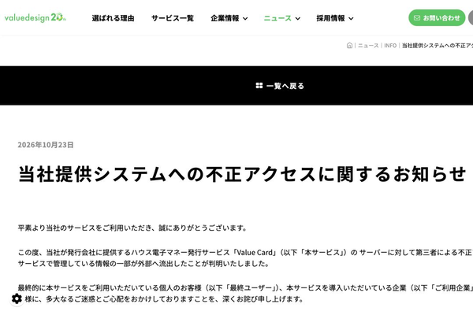
モスカード、113万件の情報流出 委託先に不正アクセス - 週刊アスキー
ポン☆潤々さんがリポスト
5月24日ファンミの1boxライブで上位賞を後日発送の方で同じように届いてない人いませんか？
または届いてる報告でも良いのですが……
#ラブカ


ususio
@ususio_ws
@kidanit
リプライ失礼いたします。
ラブカのイベント景品について、ユーザーサポートに何度も問い合わせましたが、解決に至らなかったため、ご相談させていただきたくご連絡いたしました。
お手数ではございますが、画像をご確認いただけますでしょうか。
何卒、よろしくお願いいたします。
日本経済新聞 電子版（日経電子版）さんがリポスト
米ヘッジファンドが大打撃 ＡＩ半導体調整で「ディープシーク・ショック級」の声
米ヘッジファンドが大打撃 AI半導体調整で「ディープシーク・ショック級」の声
なるせひろのりさんがリポスト
【シートベルトの腹部圧迫による死亡】
・発生：2024年8月
・被害：7歳と5歳の女児2人が腹部圧迫による出血等で死亡
▶︎ 軽乗用車の後部座席に7歳と5歳の姉妹が乗車し、車両備え付けのシートベルトを着用していた。
さらに表示 (元の投稿を開く)
Yahoo!ニュース
@YahooNewsTopics
【チャイルドシートの義務拡大 検討】
https://
news.yahoo.co.jp/pickup/6600127
なるせひろのりさんがリポスト
iPhone Duoの内部画面が割れる理由が明らかに。
スプリングロックの連動プレートが割れます。
連動する破片が応力を解放します。
スプリングロックを押すと画面が割れます

아이폰 듀오 디스플레이 이슈 원인 발견
ポン☆潤々さんがリポスト
【関東から東北出張されるリーマンたちへ】
•都市銀行探してもほぼないです
（駅前ウロウロしてもない）
•街なかに、みずほが1店舗あるぐらい
•三井住友、UFJ、りそな↓
#東北 #都市銀 #仙台 #盛岡 #郡山

日本経済新聞 電子版（日経電子版）さんがリポスト
パワーエックス、祖業の電気運搬船・EV充電器は停滞 蓄電池でしのぐ

パワーエックス、祖業の電気運搬船・EV充電器は停滞 蓄電池でしのぐ
夷（ゑびす）@『アニメ聖地移住』集英社インターナショナルさんがリポスト
『おねがい☆ティーチャー』新作映像が完成 「聖地」木崎湖のほとりで31日最速上映会(マグミクス)
#Yahooニュース

『おねがい☆ティーチャー』新作映像が完成 「聖地」木崎湖のほとりで31日最速上映会（マグミクス） - Yahoo!ニュース
＞ω＜さんがリポスト
Samsungのテレビがやけに不思議なターゲット公国を出すから調べたら、音声を録音して送信してるらしい。
で、調査過程でOpenAIにBANされてる

log4j
@log4j
私は比較的新しい（2025年）のサムスンTVを持っています。
妙にターゲティングされた広告が頻繁に表示されるんです。
ファームウェアをリバースエンジニアリングしようと試みましたが、AESで暗号化されていて、キーもなければ、分解してUART/JTAGの魔法をかけるしかない状況でした。
貝さんさんさんがリポスト
#アニメ生穴る
輿水畏子さんがリポスト
#アストラルパーティー

ノンセッションVol.17、無事終演いたしました
お客様と楽しい時間を過ごせてとても幸せです。3部はMVPもいただきました
ありがとうございました

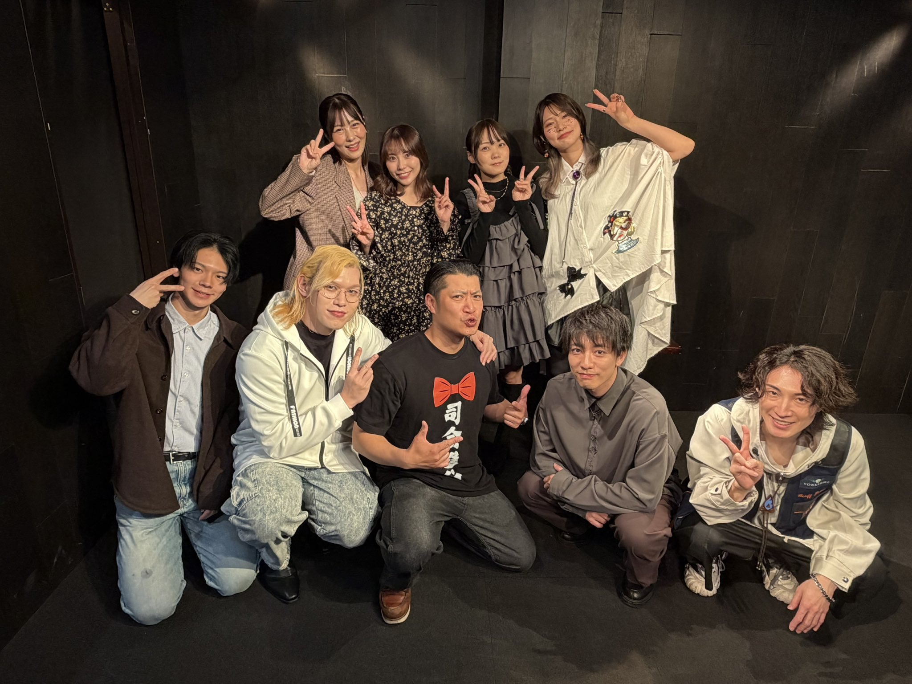
Non session
@NonSession2509
全公演終演いたしました
『Non session Vol.17』
ステージカフェ下北沢亭
たくさんのお客様のご来場、ありがとうございました
楽しんでいただけましたでしょうか
また、明日お会いしましょう
#ノンセッション
ギズモード・ジャパン（公式）さんがリポスト
moddictからPhonemer(フォニマー)を発売します！！ リアルタイムフォルマント合成や韻律を実現する新設計のスピーチエンジン、14.4万語の発音辞書!!!!柔軟かつ多数使用可能なエフェクト群充実しすぎたモジュレーション！そしてUSB Keyboard対応！！まさにSpeech Computer＼(^o^)／


さたけさんがリポスト
【第５１回府中刑務所文化祭】
／
日時：１１／３(祝) ９時START
場所： #府中刑務所
＼
一日刑務所長にボクシング女子金メダリストの入江聖奈さん。その他、刑務所製パン、プリズンツアー、刑務所作業製品販売など。詳しくはQRコードから。お待ちしてます。
#文化祭 #矯正展 #刑務官 #見学 #CAPIC

滝沢ガレソさんがリポスト
【悲報】アンパンマンショーの最中にパパ同士のケンカが勃発 @横浜アンパンマンミュージアム
何のために生まれて何をして生きるのか？
真の答えを探すために平和なショーそっちのけでバトるパパ達が話題に

貝さんさんさんがリポスト
初詣デートについてきた翔子さん
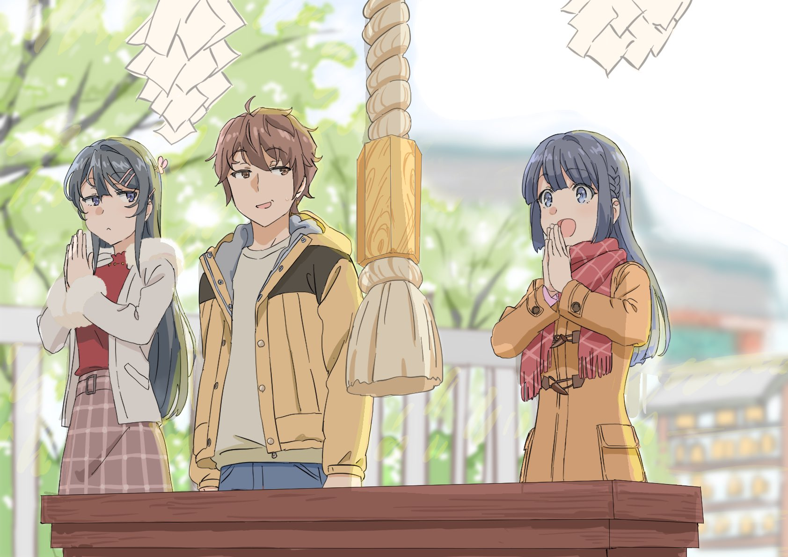